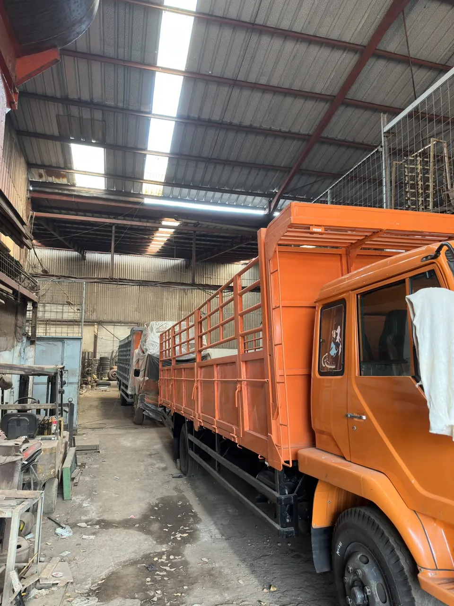

Aman & terpercaya
Menempatkan keamanan barang dan kepercayaan pelanggan sebagai prioritas perjalanan.
KENALI MITRA PERJALANAN ANDA
Mengenal PT. Sehati Hutama Transindo, perusahaan transportasi angkutan darat yang berdiri sejak 22 November 1980 dan berkantor pusat di Bandung.

SEHATI / DI BALIK PERJALANANLEBIH DARI SEKADAR PENGIRIMAN
Sejak 22 November 1980, PT. Sehati Hutama Transindo hadir untuk mendukung perjalanan bisnis melalui transportasi angkutan darat yang dapat diandalkan.
Berpusat di Bandung, kami mengutamakan keamanan barang, ketepatan waktu, dan kepuasan pelanggan. Dukungan manajemen dan pilihan armada membantu kami menyesuaikan layanan dengan kebutuhan pengiriman.
Perjalanan perusahaan menjadi landasan kami dalam mendampingi kebutuhan distribusi bisnis Anda.
PT. Sehati Hutama Transindo berdiri sebagai perusahaan jasa transportasi angkutan darat.
Berbasis di Bandung, Sehati melayani rute utama Jabodetabek, Jawa Barat, dan Jawa Timur dengan pilihan armada Engkel, Tronton, serta Build-up.
Kami percaya hubungan yang baik dibangun melalui pelayanan yang konsisten, dari muatan pertama hingga tujuan akhir.
Menempatkan keamanan barang dan kepercayaan pelanggan sebagai prioritas perjalanan.
Mengupayakan distribusi yang tepat waktu untuk mendukung kelancaran operasional bisnis.
Manajemen yang profesional dan pilihan armada untuk mendampingi kebutuhan pengiriman.
Menjadi transporter andalan yang selalu mengutamakan kepuasan pelanggan.
Memberikan layanan distribusi yang profesional dan dapat diandalkan melalui manajemen yang solid serta armada yang lengkap.